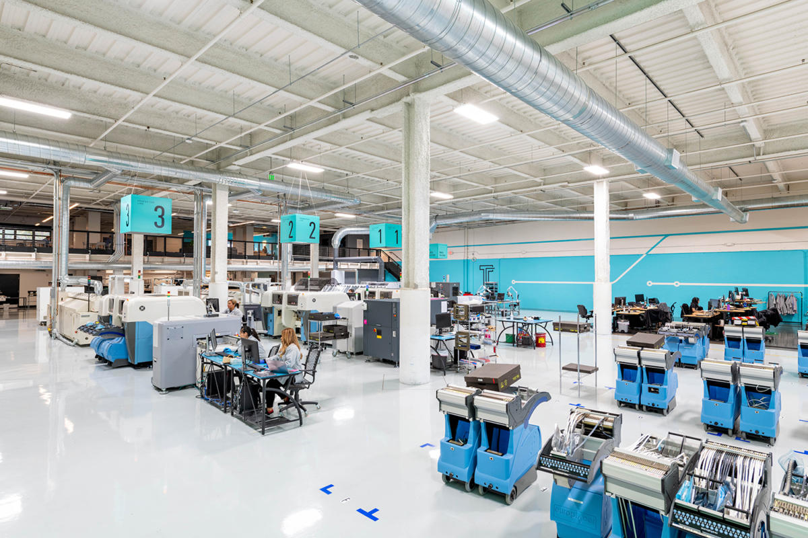

Free Military Parcels:
The dispatch of the military parcels to soldiers and NCOs can be sent free of charge.
The dispatch of the military parcels weighing up to three kilograms can be sent free of charge to soldiers and NCOs doing their national service or by new recruits containing their civilian apparel (up to five kilograms).
Free Parcel Post
This Service is provided to companies which give customers the possibility to return for free products that they have sent to them or publications, recycling materials etc. The companies pay the postage fees themselves, so that customers returning the goods can do so free of charge Customers can post Free Parcels at all Hellenic Post branches and postal agencies. The returned Free Parcels are delivered by ELTA to the address of the company while at all stages of the parcel’s transportation there is tracking.
Cash on Delivery:
On the delivery of a parcel the postman receives the amount of money that the sender has requested in cash or with money orders.
Insured Items:
A parcel can be sent as insured and the insured value ranges from the minimum amount of 36 euros to the maximum amount of 30.000 euros. In the case of loss or damage, compensation is given to the sender.
“At Home” Delivery:
The parcels are delivered at the address of the recipient.
“At Home” Collection:
Parcels can be collected from the sender’s address. This service is provided to the customers who have signed a contract with ELTA.
Fragile or Oversized Parcels:
This special service can be used for parcels with fragile content or with dimensions and/or weight above the standard.
Express Delivery Parcels:
The parcels of this category are charged with the express delivery fees and are sent as postal items of A’ Priority with the relevant time of delivery.CEO of FCS
International parcels
International Parcels
The parcels with destination to countries all over the world are sent either by air or by a combination of transportation means, including ship, train, truck and air.
General Characteristics:
The International Parcels are divided into six categories depending on the speed of their transportation and on their charges:
Priority: Parcels that are dispatched by air and are managed as priority postal items.
Non Priority: Parcels that are dispatched by a combination of transportation means, including ship, train, truck and air.
The International Parcels of both categories are delivered at HOME.
The deposit of the International Parcels of both categories Priority and Non Priority takes place at the ELTA Post Offices or at the Postal Agencies of ELTA.
The sender is responsible for packing the parcel securely and for making sure that the addresses of both the sender and the recipient are clearly marked in Latin characters on the parcel.
EPG International Parcels (EUROPEAN PARCEL GROUP)
The EPG Parcels are International Parcels with advanced features. This category of parcels can be used instead of Priority parcels for the countries in the E- Parcel Group. Their main comparative advantages are:
Attractive pricing: Prices are at similar levels to Priority parcels.
Reliability – Real Time Information: they are tracked at every stage of their journey allowing for information to be available at all times.
Delivered at the address of the recipient: They are delivered at certain date at the address of the recipient and if the sender or the recipient wishes the parcel can be delivered to another point of delivery e.g. Post Office, Postal Agency etc.)
Security and Insurance without extra cost: In case of loss or damage (total or partial) there is compensation awarded with the maximum amount being 450 SDR (Special Drawing Rights)
The countries/Interconnect accepting EPG parcels are the following:
Austria, Belgium, France (including Corsica and Monaco), Germany, Cyprus, Denmark, Switzerland, Estonia, United Kingdom, , Iceland, Spain (including Vale rides and Canaries islands) Ireland, Italy, Croatia, Latvia, Lithuania, Luxembourg, Malta, Norway, Netherlands, Hungary, Poland, Portugal (including Azores), Romania, Slovakia, Slovenia, , Sweden, Czech Republic, Finland.
Notice: The EPG Parcels cannot be sent as Cash on Delivery (COD) items, Insured, Oversized or Fragile.
Notice: The “oversized” or “fragile” parcels can be accepted in the case that the destination country accepts the parcels of these categories.business-analysis.org
Parcel packing
The most important thing to remember is that when parcels enter the courier sorting hubs, they join thousands of other parcels as they travel by conveyor belt from one place to the next. The machines won’t see any extra labels such as "fragile" or "this way up" so it's vital you package your item well enough to handle anything.myparsedelivery.com

Company factory
A prominent and highly unique feature of the building is the ‘super’ awning which spans 140 metres long and 30 metres wide. The largest of its kind in Greece, this super structure is made up of two 70 metre arched trusses providing a clear column to column span of 70 metres. The huge shelter enables for all weather loading throughout the year resulting in greater productivity rates and overall efficiency for the end user. Additional scope of works include several ancillary offices such as a Dock Office Control Room, Tech Office and Warehouse Office as well as 7,341m2 external heavy-duty concrete pavements, 2-off inground stormwater onsite detention tanks and a fire pump room, sprinkler tank and rainwater tank. The facility also contains a carpark built over 2,836m2 of light-duty pavement which accommodates parking for up to 80 vehicles and includes an under-croft carpark.
Taylor prioritised and fast tracked the design and construction and coordinated a staged handover which ultimately enabled Australia Post to occupy their tenancy in November 2018, prior to the peak Christmas season.
To enable Australia Post’s automated conveyor contractor early access to the site, it was necessary for Taylor to complete the slab and roof of the structure first. Therefore, the team constructed works out of sequence in comparison with traditional industrial construction. That is, Taylor placed the internal concrete slabs to the central third of the warehouse prior to structural steel frame erection which then provided sufficient curing time prior to commencement by Australia Post’s conveyor fitout contractor.fcs.gr